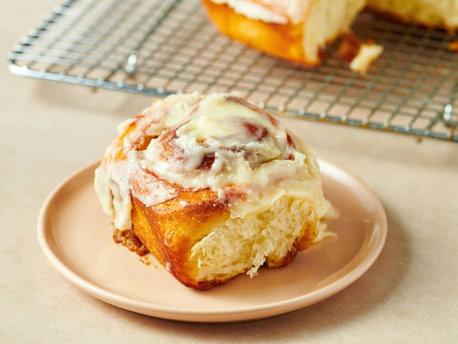

Homemade Cinnamon Rolls

Description
For these sheet pan hot honey chicken bowls, seasoned chicken and sweet potato chunks are drizzled with hot
honey and roasted on a sheet pan.
They are served in a bowl over rice, and topped with lightly dressed kale salad mix and crumbled feta.
Ingredients
- ½ cup milk
- ½ cup water
- ¼ cup butter
- 3 cups unbleached all-purpose flour
- ½ cup white sugar
- ½ teaspoon salt
- 1 (.25 ounce) package rapid-rise yeast
- 1 large egg
- ¼ cup butter, softened
- 1 cup light brown sugar
- 1 tablespoon ground cinnamon
- 3 ounces cream cheese, softened
- 1 tablespoon butter, softened
- 1 tablespoon milk
- ½ teaspoon vanilla extract
- 2 cups confectioners' sugar
Steps
- Gather all ingredients.
-
To make the cinnamon rolls: Heat milk, water, and ¼ cup butter together in a saucepan over medium
heat until bubbling, about 5 minutes. Let cool to 120 to 130 degrees F (49 to 54 degrees C), 1 to 2
minutes.
-
Mix flour, white sugar, salt, and yeast together in a separate bowl. Mix egg into warm milk mixture.
-
Pour milk mixture and ⅓ of the flour mixture into a mixing bowl; beat using an electric mixer
until moistened. Add remaining dry ingredients slowly until a dough has pulled together.
-
Knead dough on a lightly floured surface for 8 minutes. Place in a covered bowl and let rise in a dry,
warm place until doubled in size, 1 to 2 hours.
-
Punch dough down. Roll on a lightly floured surface into a 16×12-inch rectangle. Spread ¼
cup softened butter evenly over dough.
-
Mix brown sugar and cinnamon together in small bowl and sprinkle evenly over dough, making sure all
surface is covered with cinnamon-sugar.
- Starting at a short end, roll dough tightly to form a log; cut log into 12 even pieces.
-
Place rolls into a greased 9×13-inch glass baking dish. Cover and let rise in a dry, warm place, 8
hours, to overnight. When ready to bake: Preheat the oven to 375 degrees F (190 degrees C).
- Bake cinnamon rolls in the preheated oven until golden, about 17 minutes.
-
Meanwhile, make the icing: Beat cream cheese, 1 tablespoon butter, milk, and vanilla extract in a bowl
with an electric mixer until creamy; slowly mix in confectioners’ sugar until smooth.
-
Remove cinnamon rolls from the oven and flip out onto a cooling rack; let cool slightly, 5 to 10
minutes.
- Cover the tops of the rolls with icing.
← Home